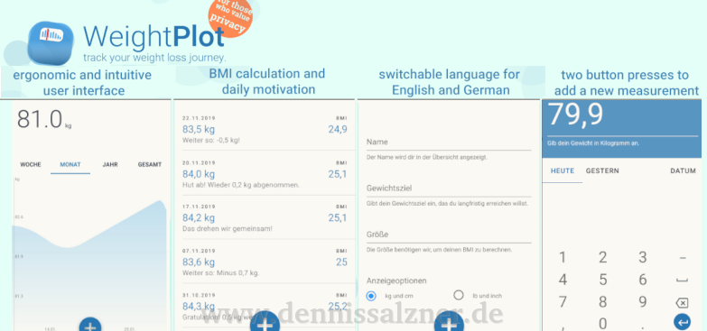

So far we've read the state of the keyboard by actively polling it. A better method of reacting to keyboard events is by using interrupts.
For a Custom OS to be any kind of useful we need some means of interaction with the user. One way to interact with our custom OS is keyboard input. With the ability to print text on screen and get keyboard input from the user we can already build simple dialog systems.
Last time around we build the cross-compiler. With it we can now compile the barebones tutorial from the osdev-Forums. We can then boot this custom kernel safely in QEmu, a hypervisor, that emulates a computer CPU.
Inspired by the osdev-forums and the likes of TempleOS, as a challenge and to learn more about modern computer architectures, I'll give writing a tiny custom operating system from scratch a try. I'll be documenting the process in this multi-part series.
In a joint effort and over the course of a year ingofritsch.at and I have built and released a smart phone app.
The QT/QML based native app with a custom chart component runs on Android and iOS, is designed to be minimalistic and is meant for tracking personal weight information on-device without cloud storage for data privacy.

Read More >>
CNC (=computerized numerical control) milling is the process of removing material by using a rotary cutter that is positioned by a computer. I have been constructing my own CNC milling machines and after many attemps with various levels of success, I switched to a commercial mechanics kit that I then modified for my purposes.
The DirtDevil Spider M607 is a cheap entry-level vacuum robot. It does not feature optical mapping, but rather randomly moves around until it hits an obstacle and then turns to avoid it. This works reasonably well, but I purchased the robot in order to modify it.
A small speaker and a small single board computer with some Linux software is all that is required to build a WiFi speaker. With it you will be able to listen to music within WiFi range and optionally control music with your smartphone.
The Atari ST Mega home computer was produced from 1985 to 1994. It uses the Motorola 68k line of chips as its main processor with a 16 bit data bus. The Atari ST Mega that I have came with an Atari Megafile hard disk and Atari SM124 monochrome monitor. In the following I describe the modifications I have made to make the computer useable in the 21st century.
I’ve been growing herbs on my balcony in the summer. The heat causes the water to vaporate quickly meaning I have to water the growing beds every day. If I’d forget or when I’m on a business trip, the herbs would dry up. So the only solution is automatic watering.
PCB etching is the process of making your own circuit boards. There are multiple ways of achieving this. This is a description of my experiences and why I now avoid PCB etching, whenever possible.
The DigiStump DigiSpark is an excellent microcontroller development board. The price of only 1-2 Euro is so low you can drop it in your designs and leave it there. […] This Guide will show you how to setup the Arduino IDE, configure it for use with the DigiSpark Board, set up the drivers, connect it and compile and program the „Echo“ Example, which enables sending data to and from the DigiSpark via USB using either Python or C++.
The image was taken by my group during the practical exercises for the astrophysics course.
(Course work submission for the 2016 'Do it yourself' (DIY) lecture at the University of Erlangen-Nürnberg)
Cooking can be a real hassle at times. Especially, when one has a manually controlled stove. [..] Therefore, we propose the next logical step: bring the revolution to the kitchen! We start by automating the stove.
(An easy method for controlling servo motors from your computer's USB port)
I've adapted the I2C script for reading the compass module, so that I can now use it to talk to a PCA9685 PWM driver IC. This enables me to control pulse width modulated servo motors.
(A method for connecting a compass module to a computer via USB using only an FTDI chip, 4 wires, 2 resistors and a single Python script)
I've written code to read out the HMC5883 compass module via I2C using an FTDI FT232RL in BitBang-Mode.
My doorbell doesn't work properly. So I set out to fix it. But then I realized I couldn't do so easily. The reason is a faulty switch outside of my appartment. I can't repair it, because there is mains current running through another switch next to it. I can't shut that off, because the fuse is located somewhere in the building and I don't know where. But I had to do something. After all I had set out to 'fix' something. So I decided to connect my doorbell to the internet.
Got my hands on an ESP8266 WiFi-Module. These modules cost next to nothing (around 3 Eur from Chinese suppliers on eBay, and about 8 Eur from a German supplier, if you need them fast). I want to use them in order to monitor the gas usage for heating and water in my apartment.
I've finally gotten around to completing my WiFi controlled car. This project has been lying around for ages. I recently bought a hand-held circular saw and with it I can cut aluminum rods. That got me the motivation to finish the cars chassis.
The car connects to the local area network via WiFi. It runs two web servers, one for controlling the motors and one for viewing the web cam. After turning it on all I need to do is open the two webpages in my browser and I can control the car and see where it's going
Some time ago I had an interest in astronomy. I made an effort to take photos of some of the objects in the sky I found particularly interesting. We started with the Moon, then Saturn and Jupiter with some of its Moons. Then we tried photographing galaxies and nebula - some of the Messier objects - but this is where we reached the limitations of our set up.